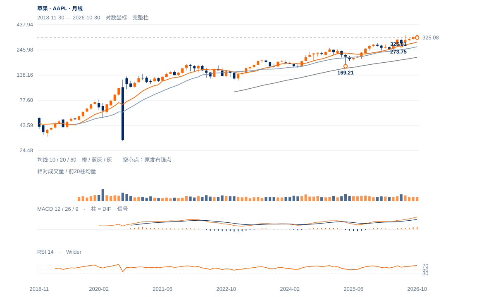

长线强势回测
近期偏向345.34—355.38内消化，上方保持比盘中新高重要。
近期偏向345.34—355.38内消化，上方保持比盘中新高重要。
未来2—6周维持“长线强势回测”的波段基准。原355.38两日条件继续计，360.83为新上试高。345.34原日收失效线保留。周线转折还需较高/较低同级拐点及完整收盘跟进；本周仍在进行中，不提前计周级确认。
未来1—3个月长期方向仍相对较强，325.81周谷是更大结构边界；持续周收失守后才转向300—295深回撤情景，新高区不虚构精确目标。

展开图表 ↗多年较高大谷仍在，10月325.81是较重要周级谷；11月359.37—360.83上试尚未转成持续新高扩张，强势也需接受需求检验。
13日收356.27高于355.38，但16—17日352.78/351.91再次回落；原两日过滤仍未完成。345.34旧高仍在下方，不能把局部突破不足直接当长期熊转。
11-13收356.27（+0.47%）；11-16收352.78（-0.98%）；11-17收351.91（-0.25%）。
RSI14 56.28；ATR14 7.89；相对成交量0.75倍。成交只在同一来源序列内计算相对量与OBV，不据开平分类推断账户动机。
2026-10-20 低338.44，确认日2026-10-27；2026-10-23 高351.46，确认日2026-10-30；2026-11-03 低325.08，确认日2026-11-10
原355.38两日条件继续计，360.83为新上试高。
345.34原日收失效线保留。
345.34旧高与325.81周级谷仍在下方，多年较高低点链条较完整；短线高位保持不足尚未转成完整长期下降。
完整周线截至2026-11-13，完整月线截至2026-10-30；11月与本周尚未收完。七姐妹本次整段改用聚源前复权、不含分红再投资口径；旧发布阈值按原规则保留。